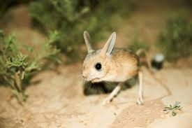

Long-eared Jerboa
Least Concern
Estimated remaining: Unknown
Habitat
Deserts and sandy valleys of Mongolia and northwestern China, including high-elevation plateaus.
Threats
- Habitat degradation from agriculture and mining
- Climate change and desertification
- Vehicle strikes and predation
Conservation efforts
EDGE of Existence research, protected desert zones, and public awareness campaigns. Monitoring continues to assess population health.